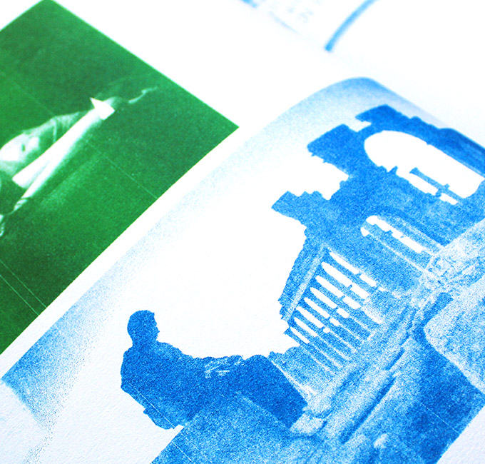
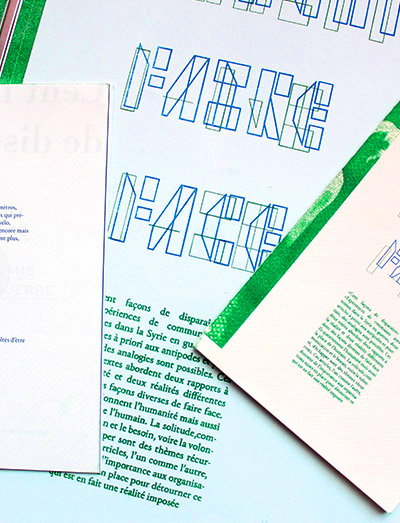
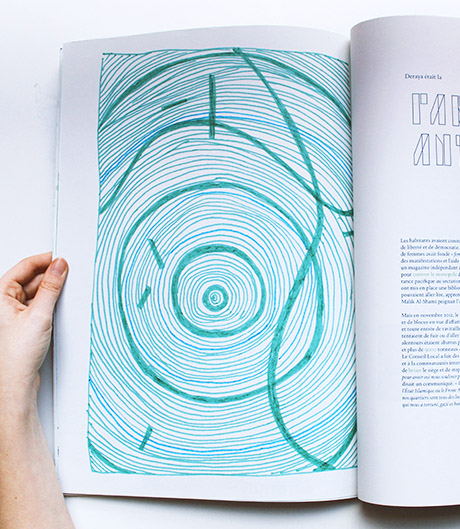
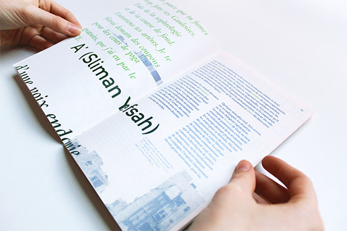
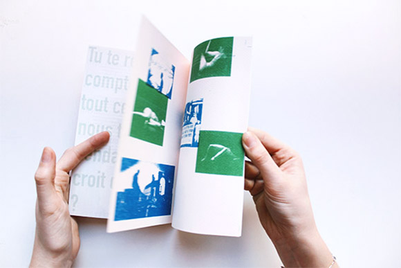
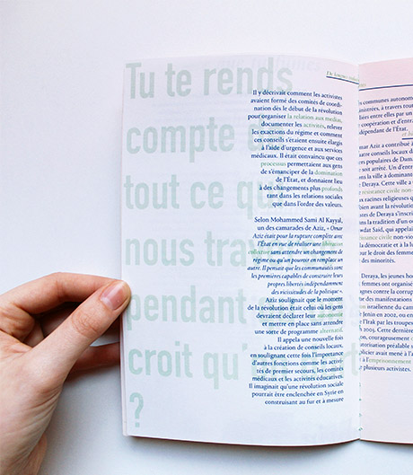
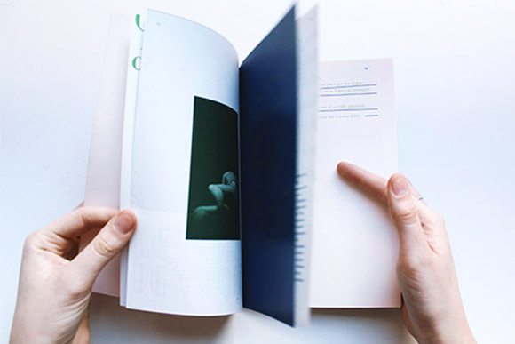

How to deal with reality?
Workshop with Formes Vives
1 Format, open—A2 / 1 Format open—A5
Printed in risography on recycled paper
Toulouse—April 2017
Project executed during a workshop with Adrien Zammit from the collective "Formes Vives" and in collaboration with Clémence Estingoy.
The central isuue of the project was to (re) think the diffusion of articles by the news website Lundi-Matin. How to make digital content
accessible? Thinking about others reading contexts. Bringing meaning through form. We chose to bring together two articles, one of which
is « A hundred ways to disappear », which poetically addresses the theme of hyperconnectivity and the impossibility of escaping from it,
as well as « Experiences of autonomous communes in warn-torn Syria » in an easily transportable edition.
The edition deals with two different attitudes to reality, and so different ways of dealing with it. They question humanity but also the place
of human beings. Loneliness, pressure from society, communication and the need, if not the will, to escape are recurring themes. Both of
these articles stress the importance of the organizations set up to deflect what is in fact an imposed reality. The message is conveyed
in a light and non-judgmental way to make it accessible to a wider audience. On the face of it, these two articles seem to have nothing
in common but we can compare them thanks to the editorial composition. We each worked on one article and then, subsequently,
we intervened on each other production. Its layout allows the reader to juggle from one article to another while establishing links
between them. A colorful principle is put in place to differentiate the two articles and our interventions. Over the course of the editions
echoes are produced between them. This layout allows another interpretation of these articles that usually would probably not have been
put side by side.
The central isuue of the project was to (re) think the diffusion of articles by the news website Lundi-Matin. How to make digital content
accessible? Thinking about others reading contexts. Bringing meaning through form. We chose to bring together two articles, one of which
is « A hundred ways to disappear », which poetically addresses the theme of hyperconnectivity and the impossibility of escaping from it,
as well as « Experiences of autonomous communes in warn-torn Syria » in an easily transportable edition.
The edition deals with two different attitudes to reality, and so different ways of dealing with it. They question humanity but also the place
of human beings. Loneliness, pressure from society, communication and the need, if not the will, to escape are recurring themes. Both of
these articles stress the importance of the organizations set up to deflect what is in fact an imposed reality. The message is conveyed
in a light and non-judgmental way to make it accessible to a wider audience. On the face of it, these two articles seem to have nothing
in common but we can compare them thanks to the editorial composition. We each worked on one article and then, subsequently,
we intervened on each other production. Its layout allows the reader to juggle from one article to another while establishing links
between them. A colorful principle is put in place to differentiate the two articles and our interventions. Over the course of the editions
echoes are produced between them. This layout allows another interpretation of these articles that usually would probably not have been
put side by side.







